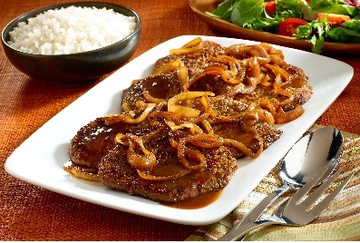

Bistec Encebollado
Una receta clásica de bistec, fácil de seguir. Usamos una mantequilla de hierbas rápida para potenciar el sabor.
Ingredientes
- 2 bistecs de res (200 g c/u)
- 1 cebolla grande en rodajas
- 2 dientes de ajo picados
- 2 cucharadas de aceite de oliva
- 1 cucharada de salsa de soya (opcional)
- Sal y pimienta al gusto
Preparación
- Preparar la carne
- Seca los bistecs y sazona con sal, pimienta y ajo picado.
- Cocinar la cebolla
- En una sartén, calienta el aceite de oliva.
- Agrega la cebolla y sofríe hasta que esté dorada y transparente.
- Sellar la carne
- Retira la cebolla y resérvala.
- En la misma sartén, dora los bistecs 3–4 min por lado.
- Unir todo
- Devuelve la cebolla a la sartén; añade soya si deseas.
- Cocina 2 minutos más.
- Servir
- Acompaña con arroz, ensalada o papas fritas.